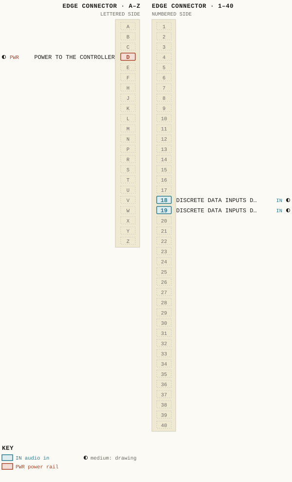
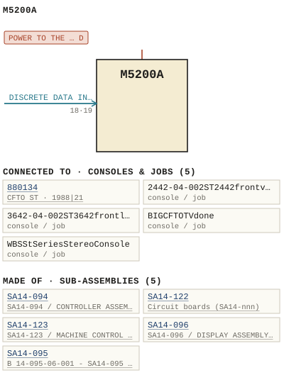

M5200A
| Type | module |
| Category | INPUT-PRE-AMPS |
| Try it | simulator & front panel · download package (zip) |
| Earliest dated evidence | 1985|18 — manual issue date |
| Evidence | "Issue #1 August 1985" in PUBLIC/Manuals + tech DOCUMENTS/Modules/M5200A - Controller Module/M5200A - 015(1).jpg |
| Confidence | high |
| All years found | 1985|18, 1986|19, 1987|20 |
| Used in jobs | 880134 (1988|21), 2442-04-002ST2442frontviewlayout, 3642-04-002ST3642frontlayout, BIGCFTOTVdone, WBSStSeriesStereoConsole |
| Variants | M5200 |
| Folder | Modules/INPUT-PRE-AMPS/M5200A |
| Folder | PHOTOS/Drawings |
Connections and circuit (ideal SPICE model)
Inputs, outputs, power and control as its own documents name them (no RTO-144 sheet for it: pin numbers only where the page gives them). Run the generator, turn the gain, watch the VU.
Pictures


M5200A.pinout.svg

M5200A.connections.svg 1985 - M5200A - 001 (2).jpg
1985 - M5200A - 001 (2).jpg 1985 - M5200A - 001.jpg
1985 - M5200A - 001.jpg 1985 - M5200A - 015 (2).jpg
1985 - M5200A - 015 (2).jpg 1985 - M5200A - 027 (2).jpg
1985 - M5200A - 027 (2).jpg 1985 - M5200A - 027.jpg
1985 - M5200A - 027.jpg 1985 - M5200A - 032 (2).jpg
1985 - M5200A - 032 (2).jpg 1985 - M5200A - 032.jpg
1985 - M5200A - 032.jpg 1985 - M5200A - WBS M5200A_Page_18.jpg
1985 - M5200A - WBS M5200A_Page_18.jpg 1986 - M5200A - WBS M5200A_Page_35.jpg
1986 - M5200A - WBS M5200A_Page_35.jpg 1987 - M5200A - WBS M5200A_Page_38.jpg
1987 - M5200A - WBS M5200A_Page_38.jpg 1985 - M5200A - 000 - cover (2).jpg
1985 - M5200A - 000 - cover (2).jpg 1985 - M5200A - 000 - cover.jpg
1985 - M5200A - 000 - cover.jpg 1985 - M5200A - 002 (2).jpg
1985 - M5200A - 002 (2).jpg 1985 - M5200A - 002.jpg
1985 - M5200A - 002.jpg 1985 - M5200A - 003 (2).jpg
1985 - M5200A - 003 (2).jpg 1985 - M5200A - 003.jpg
1985 - M5200A - 003.jpg 1985 - M5200A - 004 (2).jpg
1985 - M5200A - 004 (2).jpg 1985 - M5200A - 004.jpg
1985 - M5200A - 004.jpg 1985 - M5200A - 005 (2).jpg
1985 - M5200A - 005 (2).jpg 1985 - M5200A - 005.jpg
1985 - M5200A - 005.jpg 1985 - M5200A - 006 (2).jpg
1985 - M5200A - 006 (2).jpg 1985 - M5200A - 006.jpg
1985 - M5200A - 006.jpg 1985 - M5200A - 007 (2).jpg
1985 - M5200A - 007 (2).jpg 1985 - M5200A - 007.jpg
1985 - M5200A - 007.jpg 1985 - M5200A - 008.jpg
1985 - M5200A - 008.jpg 1985 - M5200A - 008A.jpg
1985 - M5200A - 008A.jpg 1985 - M5200A - 009 (2).jpg
1985 - M5200A - 009 (2).jpg 1985 - M5200A - 009.jpg
1985 - M5200A - 009.jpg 1985 - M5200A - 010 (2).jpg
1985 - M5200A - 010 (2).jpg 1985 - M5200A - 010.jpg
1985 - M5200A - 010.jpg 1985 - M5200A - 011 (2).jpg
1985 - M5200A - 011 (2).jpg 1985 - M5200A - 011.jpg
1985 - M5200A - 011.jpg 1985 - M5200A - 012.jpg
1985 - M5200A - 012.jpg 1985 - M5200A - 013 (2).jpg
1985 - M5200A - 013 (2).jpg 1985 - M5200A - 013.jpg
1985 - M5200A - 013.jpg 1985 - M5200A - 014 (2).jpg
1985 - M5200A - 014 (2).jpg 1985 - M5200A - 014.jpg
1985 - M5200A - 014.jpg 1985 - M5200A - 015.jpg
1985 - M5200A - 015.jpg 1985 - M5200A - 016 (2).jpg
1985 - M5200A - 016 (2).jpg 1985 - M5200A - 016.jpg
1985 - M5200A - 016.jpg 1985 - M5200A - 017 (2).jpg
1985 - M5200A - 017 (2).jpg 1985 - M5200A - 017.jpg
1985 - M5200A - 017.jpg 1985 - M5200A - 018 (2).jpg
1985 - M5200A - 018 (2).jpg 1985 - M5200A - 018.jpg
1985 - M5200A - 018.jpg 1985 - M5200A - 019 (2).jpg
1985 - M5200A - 019 (2).jpg 1985 - M5200A - 019.jpg
1985 - M5200A - 019.jpg 1985 - M5200A - 020 (2).jpg
1985 - M5200A - 020 (2).jpg 1985 - M5200A - 020.jpg
1985 - M5200A - 020.jpg 1985 - M5200A - 021 (2).jpg
1985 - M5200A - 021 (2).jpg 1985 - M5200A - 021.jpg
1985 - M5200A - 021.jpg 1985 - M5200A - 022 (2).jpg
1985 - M5200A - 022 (2).jpg 1985 - M5200A - 022.jpg
1985 - M5200A - 022.jpg 1985 - M5200A - 023 (2).jpg
1985 - M5200A - 023 (2).jpg 1985 - M5200A - 023.jpg
1985 - M5200A - 023.jpg 1985 - M5200A - 024 (2).jpg
1985 - M5200A - 024 (2).jpg 1985 - M5200A - 024.jpg
1985 - M5200A - 024.jpg 1985 - M5200A - 025.jpg
1985 - M5200A - 025.jpg 1985 - M5200A - 026.jpg
1985 - M5200A - 026.jpg 1985 - M5200A - 028 (2).jpg
1985 - M5200A - 028 (2).jpg 1985 - M5200A - 028.jpg
1985 - M5200A - 028.jpg 1985 - M5200A - 029 (2).jpg
1985 - M5200A - 029 (2).jpg 1985 - M5200A - 029.jpg
1985 - M5200A - 029.jpg 1985 - M5200A - 030.jpg
1985 - M5200A - 030.jpg 1985 - M5200A - 031 (2).jpg
1985 - M5200A - 031 (2).jpg 1985 - M5200A - 031.jpg
1985 - M5200A - 031.jpg 1985 - M5200A - 033 (2).jpg
1985 - M5200A - 033 (2).jpg 1985 - M5200A - 033.jpg
1985 - M5200A - 033.jpg 1985 - M5200A - 034 (2).jpg
1985 - M5200A - 034 (2).jpg 1985 - M5200A - 034.jpg
1985 - M5200A - 034.jpg 1985 - M5200A - 035 (2).jpg
1985 - M5200A - 035 (2).jpg 1985 - M5200A - 035.jpg
1985 - M5200A - 035.jpg 1985 - M5200A - 036 (2).jpg
1985 - M5200A - 036 (2).jpg 1985 - M5200A - 036.jpg
1985 - M5200A - 036.jpg 1985 - M5200A - 037 (2).jpg
1985 - M5200A - 037 (2).jpg 1985 - M5200A - 037.jpg
1985 - M5200A - 037.jpg 1985 - M5200A - 038 (2).jpg
1985 - M5200A - 038 (2).jpg 1985 - M5200A - 038.jpg
1985 - M5200A - 038.jpg 1985 - M5200A - 039 (2).jpg
1985 - M5200A - 039 (2).jpg 1985 - M5200A - 039.jpg
1985 - M5200A - 039.jpg 1985 - M5200A - 040.jpg
1985 - M5200A - 040.jpg 1985 - M5200A - 041.jpg
1985 - M5200A - 041.jpg 1985 - M5200A - 042 (2).jpg
1985 - M5200A - 042 (2).jpg 1985 - M5200A - 042.jpg
1985 - M5200A - 042.jpg 1985 - M5200A - 14-094-02-001 - CONTROLLER ASSEMBLY SCHEMATIC.jpg
1985 - M5200A - 14-094-02-001 - CONTROLLER ASSEMBLY SCHEMATIC.jpg 1985 - M5200A - 14-094-02-001 - TAACIJIH PORT CIL UJJ RIOZ RIOJ.jpg
1985 - M5200A - 14-094-02-001 - TAACIJIH PORT CIL UJJ RIOZ RIOJ.jpg 1985 - M5200A - 14-094-06-001 - XOTSH EELEL.jpg
1985 - M5200A - 14-094-06-001 - XOTSH EELEL.jpg 1985 - M5200A - 14-096-02-001 - ASSEMBLY SCHEMATIC.jpg
1985 - M5200A - 14-096-02-001 - ASSEMBLY SCHEMATIC.jpg 1985 - M5200A - 14-096-06-001 - ASSEMBLY COMPONENT LAYOUT.jpg
1985 - M5200A - 14-096-06-001 - ASSEMBLY COMPONENT LAYOUT.jpg 1985 - M5200A - 14-123-02-001 - MACHINE CONTROL INTERFACE ASSEMBLY SCHEMATIC.jpg
1985 - M5200A - 14-123-02-001 - MACHINE CONTROL INTERFACE ASSEMBLY SCHEMATIC.jpg 1985 - M5200A - 14-123-02-002 - SAUD ELZD.jpg
1985 - M5200A - 14-123-02-002 - SAUD ELZD.jpg 1985 - M5200A - 14-123-06-001 - MACHINE CONTROL INTERFACE ASSEMBLY COMPONENT LAYOUT.jpg
1985 - M5200A - 14-123-06-001 - MACHINE CONTROL INTERFACE ASSEMBLY COMPONENT LAYOUT.jpg 1985 - M5200A - 5200-02-002 - CONTROLLER MODULE SCHEMATIC.jpg
1985 - M5200A - 5200-02-002 - CONTROLLER MODULE SCHEMATIC.jpg 1985 - M5200A - 5200-04-002 - CONTROLLER MODULE MODULE LAYOUT.jpg
1985 - M5200A - 5200-04-002 - CONTROLLER MODULE MODULE LAYOUT.jpg 1985 - M5200A - B 14-094-02-002 - SA14-094 CONTROLLER ASSEMBLY - SCHEMATIC.jpg
1985 - M5200A - B 14-094-02-002 - SA14-094 CONTROLLER ASSEMBLY - SCHEMATIC.jpg 1985 - M5200A - B 14-094-06-001 - SA14-094 CONTROLLER ASSEMBLY - COMPONENT LAYOUT.jpg
1985 - M5200A - B 14-094-06-001 - SA14-094 CONTROLLER ASSEMBLY - COMPONENT LAYOUT.jpg 1985 - M5200A - B 14-096-02-001 - SA14-096 DISPLAY ASSEMBLY - SCHEMATIC.jpg
1985 - M5200A - B 14-096-02-001 - SA14-096 DISPLAY ASSEMBLY - SCHEMATIC.jpg 1985 - M5200A - B 14-123-02-001 - SA14-123 - MACHINE CONTROL INTERFACE ASSEMBLY - SCHEMATIC.jpg
1985 - M5200A - B 14-123-02-001 - SA14-123 - MACHINE CONTROL INTERFACE ASSEMBLY - SCHEMATIC.jpg 1985 - M5200A - B 14-123-02-001 - SA14-123 INTERFACE ASSEMBLY - SCHEMATIC.jpg
1985 - M5200A - B 14-123-02-001 - SA14-123 INTERFACE ASSEMBLY - SCHEMATIC.jpg 1985 - M5200A - B 14-123-02-002 - SA14-123 INTERFACE ASSEMBLY - SCHEMATIC.jpg
1985 - M5200A - B 14-123-02-002 - SA14-123 INTERFACE ASSEMBLY - SCHEMATIC.jpg 1985 - M5200A - B 5200-04-002 - CONTROLLER MODULE - MODULE LAYOUT.jpg
1985 - M5200A - B 5200-04-002 - CONTROLLER MODULE - MODULE LAYOUT.jpg 1985 - M5200A - M5200A SYSTEM INTERCONNECT FOR ST2442 AND ST3642 CONSOLES.jpg
1985 - M5200A - M5200A SYSTEM INTERCONNECT FOR ST2442 AND ST3642 CONSOLES.jpg 1985 - M5200A - WBS M5200A_Page_01.jpg
1985 - M5200A - WBS M5200A_Page_01.jpg 1985 - M5200A - WBS M5200A_Page_02.jpg
1985 - M5200A - WBS M5200A_Page_02.jpg 1985 - M5200A - WBS M5200A_Page_03.jpg
1985 - M5200A - WBS M5200A_Page_03.jpg 1985 - M5200A - WBS M5200A_Page_04.jpg
1985 - M5200A - WBS M5200A_Page_04.jpg 1985 - M5200A - WBS M5200A_Page_05.jpg
1985 - M5200A - WBS M5200A_Page_05.jpg 1985 - M5200A - WBS M5200A_Page_06.jpg
1985 - M5200A - WBS M5200A_Page_06.jpg 1985 - M5200A - WBS M5200A_Page_07.jpg
1985 - M5200A - WBS M5200A_Page_07.jpg 1985 - M5200A - WBS M5200A_Page_08.jpg
1985 - M5200A - WBS M5200A_Page_08.jpg 1985 - M5200A - WBS M5200A_Page_09.jpg
1985 - M5200A - WBS M5200A_Page_09.jpg 1985 - M5200A - WBS M5200A_Page_10.jpg
1985 - M5200A - WBS M5200A_Page_10.jpg 1985 - M5200A - WBS M5200A_Page_11.jpg
1985 - M5200A - WBS M5200A_Page_11.jpg 1985 - M5200A - WBS M5200A_Page_12.jpg
1985 - M5200A - WBS M5200A_Page_12.jpg 1985 - M5200A - WBS M5200A_Page_13.jpg
1985 - M5200A - WBS M5200A_Page_13.jpg 1985 - M5200A - WBS M5200A_Page_14.jpg
1985 - M5200A - WBS M5200A_Page_14.jpg 1985 - M5200A - WBS M5200A_Page_15.jpg
1985 - M5200A - WBS M5200A_Page_15.jpg 1985 - M5200A - WBS M5200A_Page_16.jpg
1985 - M5200A - WBS M5200A_Page_16.jpg 1985 - M5200A - WBS M5200A_Page_17.jpg
1985 - M5200A - WBS M5200A_Page_17.jpgPinout & connections
Each contact as its own documents name it: 3 named (3 medium confidence). An empty slot is a contact no page names. Hover a contact for its source; the table under the drawing lists them. A 40-pin connector, named in 1985 - M5200A - 002.pdf, p. 38.
pinout (SVG) · connections (SVG) · pins (JSON)
Pin evidence — 3 contacts
| Pin | Signal | Kind | Confidence | Read from | Source |
|---|---|---|---|---|---|
| D | POWER TO THE CONTROLLER also: POWER TO THE CONTROLL… (prose) | power rail | medium | prose | 1985 - M5200A - 002.pdf, p. 6 “The power to the controller is via a 15 pin D ' connector. 2-1” |
| 18 | DISCRETE DATA INPUTS DATA PORT 7600H PROVIDES also: DISCRETE DATA INPUTS … (prose); DISCRETE DATA INPUTS … (prose); DISCRETE DATA INPUTS … (prose) | audio in | medium | prose | 1985 - M5200A - 002.pdf, p. 35 “Discrete Data Inputs Data port 7600H provides 16 isolated control inputs Each input is isolated with an opto-coupler with both sides of eac…” |
| 19 | DISCRETE DATA INPUTS DATA PORT 7600H PROVIDES also: DISCRETE DATA INPUTS … (prose); DISCRETE DATA INPUTS … (prose); DISCRETE DATA INPUTS … (prose) | audio in | medium | prose | 1985 - M5200A - 002.pdf, p. 35 “Discrete Data Inputs Data port 7600H provides 16 isolated control inputs Each input is isolated with an opto-coupler with both sides of eac…” |
Dates found in the documents
| Year | Kind | Text | File |
|---|---|---|---|
| 1985|18 | manual issue date | MANUAL ISSUE #1 AugusT 1985 |
1985 - M5200A - 001 (2).jpg |
| 1985|18 | month & year | AugusT 1985 |
1985 - M5200A - 001.jpg |
| 1985|18 | manual issue date | MANUAL ISSUE #1 AuGuST 1985 |
1985 - M5200A - 002.pdf |
| 1985|18 | manual issue date | Issue #1 August 1985 |
1985 - M5200A - 002.pdf |
| 1985|18 | manual issue date | Issue #1 August 1985 |
1985 - M5200A - 002.pdf |
| 1985|18 | manual issue date | Issue #1 August 1985 |
1985 - M5200A - 015 (2).jpg |
| 1985|18 | manual issue date | Issue #1 August 1985 |
1985 - M5200A - 027 (2).jpg |
| 1985|18 | manual issue date | Issue #1 August 1985 |
1985 - M5200A - 027.jpg |
| 1985|18 | manual issue date | Issue #1 August 1985 |
1985 - M5200A - 032 (2).jpg |
| 1985|18 | manual issue date | Issue #1 August 1985 |
1985 - M5200A - 032.jpg |
| 1985|18 | manual issue date | Issue #1 August 1985 |
1985 - M5200A - WBS M5200A_Page_18.jpg |
| 1986|19 | manual issue date | Issue #2 February 1986 |
1986 - M5200A - WBS M5200A_Page_35.jpg |
| 1987|20 | manual issue date | Issue #4 February 1987 |
1987 - M5200A - WBS M5200A_Page_38.jpg |
Physical manual inventory
| Item | Location | Status | Scanned |
|---|---|---|---|
| M5200A - Controller Module | SCANNED BUT NEEDS STICHING | ||
| M5200A - Controller Module | Recently scanned and stiched by WB | ||
| M5200A, CONTROLLER MODULE | LOOSE BOX |
Documents (1)
| Year | File | |
|---|---|---|
| 1985|18 | 1985 - M5200A - 002.pdf | note |
Photos & scans (158)


…and 8 more in the folder.
Sub-assemblies & parts used (5)
| Item | What | Family | Year | How we know |
|---|---|---|---|---|
| SA14-094 | SA14-094 / CONTROLLER ASSEMBLY / SCHEMATIC | Circuit boards (SA14-nnn) | its circuit board | |
| SA14-122 | Circuit boards (SA14-nnn) | its circuit board | ||
| SA14-123 | SA14-123 / MACHINE CONTROL INTERFACE ASSEMBLY / SCHEMATIC | Circuit boards (SA14-nnn) | its circuit board | |
| SA14-096 | SA14-096 / DISPLAY ASSEMBLY / SCHEMATIC | Circuit boards (SA14-nnn) | drawing filed with it | |
| SA14-095 | B 14-095-06-001 - SA14-095 - INTERFACE ASSEMBLY - COMPONENT LAYOUT | Circuit boards (SA14-nnn) | named in its manual |
Parts list — board 4-123 (1 parts)
From 1985 - M5200A - WBS M5200A_Page_44.jpg, page 1 (scanned); also in timelines/data/bom.csv.
| Ref | Part | Value | Manufacturer | Mfr part no. |
|---|---|---|---|---|
| R31 | Resistor 1/4w 5%6 Philips | 3K |
Parts list — board M5200A (46 parts)
From 1985 - M5200A - 002.pdf, page 38 (scanned); also in timelines/data/bom.csv.
| Ref | Part | Value | Manufacturer | Mfr part no. |
|---|---|---|---|---|
| T0 | Relay , Volt Ok | RRDS1C12 (D) | 12 | ||
| K16 | R3I Resistor 1/4w 3k Philips | 5% | ||
| P12 | PCB Connector R33 | 6k2 | ||
| Q1 | Transistor National | 2N3904 | ||
| R1 | Resistor 1/4W 15k Philips RzB 6k2 | 5% | ||
| R13 | RSO | 6K2 | ||
| C36 | Capacitor uF/10 Kemet | 7 | T390B475M01OAS | |
| C37 | uF/100 Sprague | 0.1 | 1C1OXZRIOLMOSOB | |
| C39 | uF/10 Kemet | 4.7 | T390B475M01OAS | |
| C47 | uF/1oo Sprague | 0.1 | 1C1OXZRTOLMOSOB | |
| C48 | uF/1o Kemet | 4.7 | T390B475M01OAS | |
| C52 | uF/100 Sprague ;1 | 0.1 | 1CIOXZRIO4MOSOB | |
| C53 | uF/10 Kemet 3 | 4.7 | T390B475MO1OAS | |
| C57 | uF/100 Sprague | 0.1 | 1C1OXZRTOLMOSOB | |
| C58 | uF/10 Kemet | 4.7 | T390B475M010A5 | |
| CR6 | Zener Volt | 6 | 1N5342B | |
| CR8 | Schottky | IN5817 | ||
| J13 | Pin Dip Socket AMP | 16 | 640358-3 | |
| P9 | Pin TEEE NCY 37P 2A4K | 37 | ||
| P10 | Pin NAY 15P 2BON | 15 | ||
| P11 | Pin TEB/Ansley | 40 | 609_4007E | |
| R131 | Resistor 1/4w 240 Philips CR25 | 59 | ||
| R133 | SOT | |||
| C1 | Capacitor uF/10 Kemiet | 4.7 | T390B475MO1OAS | |
| C3 | uF/100 Sprague | 0.1 | 1C1OXZRIOLMOSOB | |
| C13 | uF/100 Sprague | 0.1 | 1C1OXZR1OLMOSOB | |
| C14 | 4. uF/10 Kemet | T390B475M01OAS | ||
| C17 | PF Philips | 68 | 2222-638-58229 | |
| C18 | uF/10 Kemet | 4.7 | T390B475M01OAS | |
| C20 | 1C0 uF/25 Phil ips | 031 | 16101 | |
| C22 | uF/10 Kemet | 4.7 | T390B475M01OAS | |
| C23 | uF/1o0 Sprague | 0.1 | 1C1OXZRIO4MOSOB | |
| C24 | 4 . uF/10 Kemet | T390B475M01OAS | ||
| C25 | uF/100 Sprague | 0.1 | 1CIOXZRIOLMOSOB | |
| C26 | uF/10 Kemet | T390B475M01OAS | ||
| C27 | uF/1o0 Sprague | 0.1 | 1C1OXZRIOLMOSOB | |
| J11 | 40 Pin Transition | |||
| R66 | Resistor 1/4W 6K2 Philips | 5 % | ||
| R101 | Resistor 1/4W 75 Philips | 57 | ||
| R136 | Resistor 1/4w 5% Philips ^.. | 3K | ||
| R171 | Resistor 1/4w 10K Philips ^ | 5% | ||
| R206 | Resistor 1/4W 330 Philips | 5% | ||
| R228 | Asv | 1K8 | ||
| DS2 | LED , Green H.P | HLMP_1501 | ||
| SW2 | Pushbutton | 8121 | ||
| U1 | Display , Segment A.P _ | 5082-7650 |
Parts list — board SA14-094 (58 parts)
From 1985 - M5200A - 002.pdf, page 21 (scanned); also in timelines/data/bom.csv.
| Ref | Part | Value | Manufacturer | Mfr part no. |
|---|---|---|---|---|
| C1 | Capacitor uF/25 V Kemet | 10 | T390C 1O6MO25AS | |
| C2 | pF Philips | 33 | 2222-638-10229 | |
| C4 | uF /25 V Kemet | 10 | T390C 106MO25AS | |
| C10 | PF Aselco | 1000 | cQ92-MC1OO-102J | |
| C11 | pF Philips | 820 | 2222-630-03821 | |
| C15 | uF/10 V Kemet | 4.7 | T3908475M01OAS | |
| C16 | pF Philips | 100 | 2222-638-58101 | |
| C17 | pF Aselco | 1000 | c092-MCIOO-102J | |
| C18 | uF/100 V Sprague | 0.1 | 1CIOXZRIOLMOSOB | |
| C21 | H pF Philips | 82 | 2222-638-58829 | |
| C23 | uF/25 Kemet | 10 | T390C 1O6MO25AS | |
| C24 | uF / 25 " Philips 030 | 22 | 16229 | |
| C25 | uF/ 25 Kemet | 10 | T390C 1O6MO25AS | |
| C28 | uF/100 V Sprague ICIOXZRIOLMOSOB | 0.1 | ||
| C29 | uF/10 V Kemet | 4.7 | T390B475M01OAS | |
| C30 | uF/100 V Sprague | 0.1 | ICIOXZRIO4MOSOB | |
| C31 | uF/10 V Kemet | 4.7 | T390B475M01OAS | |
| C32 | uF/1oo V Sprague | 0.1 | 1CIOXZRIOLMOSOB | |
| C33 | uF/10 V Kemet | 4.7 | T390B475M010AS | |
| C34 | uF/100 V Sprague | 0.1 | 1CIOXZRIO4MOSOB | |
| C35 | uF/10 V Kemet | 4.7 | T390B475M01OAS | |
| C36 | Capacitor uF/10 V Kemet | 4.7 | T390B475MO1OAS | |
| C37 | uF/100 V Sprague ICIOX7RIOGMOSOB DSI LED Red A.P . | 0.1 | HLMP_1301 | |
| C39 | uF/10 V Kemet T3908475M01OAS J1-J3 Connector, 37 Pin TEEE NCY 375 2A4K | 4.7 | ||
| C40 | uF/10 V J13 T 16 Pin Dip Socket AMP | 4.7 | 640358-3 | |
| C41 | uF/10 V P9 37 Pin TEEE NcY 37P 2A4K | 4.7 | ||
| C42 | uF/25 V T39OC1O6MO25AS P1o 15 Pin NAY 15P 2BON | 10 | ||
| C43 | uF/ 25 V T390C106M025AS P11 Lo Pin TEB/Ansley | 10 | 609-4007E | |
| C45 | uF/10 V T390B475M010AS Q1 Transistor National | 4.7 | PN3645 | |
| C47 | uF/100 V Sprague | 0.1 | 1C1OX7RIO4MOSOB | |
| C52 | uF/100 V Sprague | 0.1 | 1CIOXZRIO4MOSOB | |
| C53 | uF/10 V Kemet T390B47SMO1OAS R6 3m3 | 4.7 | ||
| C56 | uF/25 V T390C 1O6MO25AS RiO 10k | 10 | ||
| C57 | uF/100 V Sprague ICIOXZRIOLMOSOB | 0,1 | ||
| C58 | uF/10 V Kemet T390B475M010AS RII 150k | 4.7 | ||
| CR6 | Zener Volt IN5342B R19 47K | 6 . 8 | ||
| R26 | Resistor 1/4w 100 Philips R131 Resistor 1/4w 59 240 Philips | 5% | ||
| R35 | R133 SOT | |||
| R9Z | 1 Rtes | 10k | ||
| T0 | Resistor 1/4w 59 Philips R282 | 6K2 | ||
| R20G | To Resistor 1/4w 5% Philips | 6K2 | ||
| SW1 | Circuit Breaker Amp Alco | 1.5 | SC-1.SAR | |
| R241 | u1 Integrated Circuit National | NSCBOON-4 | ||
| R250 | u6 (Future) | 15 | ||
| U7 | Future) | |||
| U14 | CDLOZO8CN | |||
| C20 | Sot | |||
| U1 | Integrated Circuit National NSCBOON-_b | |||
| U3 | NMC27C320-45 | |||
| U6 | (Future | |||
| U9 | Future) NMC27C160-35 7_ | |||
| U12 | 7LHC123N < . | |||
| U15 | 74HCI4N | |||
| U17 | 74HCILN | |||
| U22 | 74HCISLN | |||
| C48 | uF/10 Kemet T390B475M01OAS R1 Resistor 1/4w 5% 15 Philips | 4.7 | ||
| C51 | uF/25 T390C1O6MOZSAS R5 10K | 10 | ||
| CR8 | ' Schottky | 1N5817 |
Parts list — board SA14-122 (3 parts)
From 1985 - M5200A - 002.pdf, page 39 (scanned); also in timelines/data/bom.csv.
| Ref | Part | Value | Manufacturer | Mfr part no. |
|---|---|---|---|---|
| R136 | Resistor 1/4w PARI DESCR PT ION MFG MFG PART NUMBER | 5% | ||
| R138 | R17I Resistor 1/4w 5% 10k Philips | 3 | ||
| R166 | Rzoo | 1K8 |
Parts list — board SA14-123 (31 parts)
From 1985 - M5200A - 002.pdf, page 37 (scanned); also in timelines/data/bom.csv.
| Ref | Part | Value | Manufacturer | Mfr part no. |
|---|---|---|---|---|
| C1 | Capaci- tor uF/10 V Kemet | 4.7 | T390B475M01OAS | |
| C3 | uF/100 V Sprague | 0.1 | 1C1OXZRIOLMOSOB | |
| C4 | " uF/1o V Kemet | 4.7 | T390B475M01OAS | |
| C8 | "' uF/100 V Sprague | 0.1 | 1C1OX7R1O4MOSOB | |
| C9 | uF/10 V Kemet | 4.7 | T390B475M0 1OAS | |
| C13 | uF/1oo V Sprague | 0.1 | 1C1OXZRIO4MOSOB | |
| C14 | uF/10 V Kemet | 4.7 | T390B475M01OAS | |
| C17 | PF Philips | 68 | 2222-638-58229 | |
| C18 | uF/1o V Kemet | 4.7 | T390B475M01OAS | |
| C20 | uF/ 25 V Philips 031 | 100 | 16101 | |
| C22 | " uF/10 V Kemet | 4.7 | T390B475M01OAS | |
| C23 | uF/100 V Sprague | 0.1 | 1CIOXZRIO4MOSOB | |
| C24 | " uF/10 V Kemet | 4.7 | T390B475M01OAS | |
| C25 | uF/100 V Sprague | 0.1 | 1CIOXZRIOLMOSOB | |
| C26 | uF/10 V Kemet | 4.7 | T390B475MO1OAS | |
| C27 | uF/100 V Sprague | 0.1 | 1CIOXZRIO4MOSOB | |
| T0 | Diode Fairchild | 1N4148 | ||
| R206 | Resistor 1/4w 1K8 Philips | 5% | ||
| R207 | R2L| Resistor 1/4w 5% 100 Philips | 1K8 | ||
| R214 | IKB R248 | 100 | ||
| R219 | u1 Integrated Circuit Nationa | 1k8 | NSC81OAN-4 | |
| U3 | 74HCZ4SN | |||
| U23 | Litronix | ILQ-1 | ||
| K1 | "Rct^` | |||
| P12 | PCB Connector TSB Ansley | 609_4003 | ||
| Q1 | Transistor National 2N3904 | 3 | ||
| R1 | Resistor 1/4W 15K Philips | 5% | ||
| R136 | Resistor /4w PART DESCRIPT ION MFG MFG PART NUMBER | 5% | ||
| R137 | Philips | |||
| R138 | R171 Resistor 1/4w 10K Philips | 5% | ||
| R166 | Rzoo | 1k8 |
Consoles & jobs it is connected to (5)
Their own drawings name this module.
| Job | Year | Drawing | Page |
|---|---|---|---|
| 880134 | 1988|21 | 1988 - 880134 - 2442-01-001 - STEREQ STEREO SWITCHER SWITCHER EXTERNAL LINE TALLY.jpg | 1 |
| 2442-04-002ST2442frontviewlayout | 1984 - ST2442 - 2442b.jpg | 1 | |
| 3642-04-002ST3642frontlayout | 1984 - ST3642 - 3642b.jpg | 1 | |
| BIGCFTOTVdone | 1988 - BIG CFTO TV done - 2442-01-001 - STEREQ STEREO SWITCHER SWITCHER EXTERNAL LINE TALLY.jpg | 1 | |
| WBSStSeriesStereoConsole | 1985 - ST - 016.jpg | 1 |


Named in other drawings & documents (19)


From the manuals
Each manual split into its sections. Text that is the same in many Ward-Beck manuals (warranty, address, standard notes) is kept once on the Boilerplate page and linked.
General description (18)
Description — 1013 words · 1985 - M5200A - 002.pdf, page 18
SA14-094 CONTROLLER ASSEMBLY Microprocessor The NSC8OO cmoS m icroprocessor utilizes the 280 instruction set. It is an 8 bit processor with 16 bit addressing capability (64K) The lower eight address Iines are multiplexed onto the 8 bit data bus The clock frequency of the microprocessor i5 crystal controlled by a 3 mHz crystal Power Fail and Reset Comparator UI1 senses a drop in the 5 volt supply voltage driving the non maskable interrupt of the microprocessor at pin 21 This arrests the execution of instructions before the power is totally lost . The output of U11 also inhibits the RAM memory (u1o) at this time 014, U15 and 016 make up a power fail control circuit which uses time to establish whether a power interruption has occured or whether a full power failure has occured and the ST series of console system should be shut down (all channels, subs and monitor- ing turned off) This circuitry is powered from the backup nickel cadmium battery On the occurance of power interruption, counter U14 is enabled at Pin 11 (switches to a logic 0) and the oscillator U15 pins 8 and 9 starts the count. The counter outputs Iabel led A through F are available to set the power interrupt time period The typical times are 8 seconds, 16 seconds, 30 seconds, 1 minute, 2 minutes and 4 minutes As shipped from the factory the 4 minute jumper is in. The counter output at pin 11 of 015 sets the power fail Iatch U16 (pins 8 through 13) The Iatch output drives the fail LED DSI and through 015 pin 4 the fourth input of data buffer 024 If the power interruption is less than the set period of time (4 minutes) then the system wiii be restored to its state prior to the power interruption. If it lasts longer than the set time period the system upon recovery of power, wili remain in a shut down state (ali channels, subs and mon itors turned off and any control functions released) The power fail Iatch (416) is reset or cleared under software control This is achieved by the addressing output at U28 pin 5 (address select 7BOOH ) 1-1
WAAD-BECK SsteMS LTD; WAAD-BeCK SYSTems LTD: CIRcUIT DESCRIPT ION CiRcuiT
SA14-094 CONTROLLER ASSEMBL Y SA14-094 CONTROLLER ASSEMBLY Memory The reset function of the microprocessor may be done manually by grounding Pin 13 of 94J13 . This is accomplished by the use of the reset pushbutton located on the front panel of the M52OOA . This pushbutton is part of the SA1L-096 Subassembly The reset function wili also occur automatically if for some reason the processor gets out of address range and stops executing the operating system software correctly Latch u2 holds the multiplexed address bits which are placed on the data bus during the addressing interval The microprocessor ALE select pulse (u1 pin 30 ) is the Iatch enter pulse (u2 pin 11 ) These addressing bits select the lower 256 locations of al| memory IC S The operating system software is located in 4K X 8 EPROMS u3, u4 and u5 . u6 and 47 prov ide for future expansion and system customization. Reset is achieved through the hardware watchdog consisiting of the retriggerable one shot 412 and the 2 Hz reset oscillator 413 pins 1 [0 3 Normal execution of the software pulses pin 1 of U12 retrigger- ing it . This inhibits the reset oscillator by holding pin 4 of 413 at a logic 0 Tevel EEPROM uB retains all mute and machine control coding. It will also retain routing switcher display codes when this option is implemented 410 is a 2k X 8 random access scratch pad memory used by the operating system During power interruptions voltage is applied to this RAM via the battery backup facilities. Addressing The upper four bits of the 16 bit addressing are decoded by the of 8 decoders u19 and u20 . Data Port_Buffers EPRodecoeeoribe addrhesoigg U7 _ 4Stanegaren tsystenis cornfeePonds uto ane u3 u5 for the operating system software The 1 of 8 decoder u21 provides 2k address selections for EEPROM 48 (3000h) , future EPROM u9 3800H ) RAM 410 4OOOH) and the select- ions to feed the internal data buses externally (4800H } L Dssemb?ort Pobuffeoooh 7O0OH be7 fcr ~ibed, 7200h opera lfoated the othes the ports are similar_ The programmable interface chip 439 has three data ports which may be utilized as inputs or outputs, all under software control These ports may be used to store the incom ing and outgoing data tempo- rarily The two 8 bit data ports of 439 are buffered to the outside world through bi-directional transceivers U41 and U42 The networks on the external side of U41 and 442 provide the necessary terminating and isolation requirements to feed multiconductor ribbon cable. These two 8 bit data ports send and receive data from external peripheral devices. The 6 bit data port from u39 (pins 1, 2 5, 37 , 38 and 39) is utilized as latched outputs only The lower 3 bits are used as NRD NWR and NALE control Iines The upper 3 bits are fed to of 8 decoder U4O , which prov ides 6 address select outputs Dependent upon data port applications address select #5 and the NALE control ine may be interchanged as required This is determined by sol der ink L8 . Buffer U43 isolates these control lines from the outside world 1-3 The 1 of 16 decoder 422 breaks down addresses from 7000h to 7FFFH into 256 bytes to provide address control selections for the data port peripheral interfaces This applies to codes 7000H through 7700H The following 7OoOH series address codes provide specific system controi functions: 7AOOH a software controlled reset function to al data port peripheral interfaces . resets power fail Iatch U16 resets external port control Iatch 434 selects data input buffer u24 selects optional time of day clock 426 selects status display Jatch U25 . 7BOOH 7cOOH 7DOOH 7EOOH 7FOOH 1-2
WAAD-BECK SysTems LTD_ WARD-BeCK SYSTEms LTD; CIRCULT
- source: 1985 - M5200A - 002.pdf, p. 18
Description — 931 words · 1985 - M5200A - 002.pdf, page 30
SA14-096 DISPLAY ASSEMBLY This assemb y mounts to the front panel of the m5200 series of controllers and supports the pertinent display and front panel switch functions of the controller The green indicators DS2 and DS3 show when the 5 volt power is present on the SA14-094 motherboard assembly and applied to the daughterboard assembly (5A14-095 or 5A1L-123 ) The red LED DSI 4 the On Line indica tor , shows when the controller is in the Master mode and processing data. This indicator is dependent upon the setting of the Master /Slave switch SwI The Master /Slave switch Sw1 must be left in the Master position to process external data If placed in the Slave position all data ports are transferred into the tri-state high impedance conditions and the microprocessor goes into a standby mode This requirement or feature is presently not utilized in the control system of the ST series of Stereo Television consoles Momentary pushbutton switch SW2 is a hardware means of resetting the M5200 microprocessor The seven segment status display U1 is a software development tool that has been incorporated in the controller operating system The individual segments are used to show the execution of various software routines. This gives a visual indication that the software is executing correctly . The status Iatch output which drives the display decimal point, pulses the hardware watchdog circuit. If the software stops operating correctly the decimal point wili not be alternately turned off and on , resulting in the watchdog resetting the microprocessor approximately every two seconds. 1-1
WAAD-BECk SYSTEMS LTD; PARTS LiST 5A14-096 DISPLAY ASSEMBL Y PART DESCRIPT ION MFG MFG PART NUMBER DSI LED, Red H.P . HLMP_1301 DS2 DS3 LED, Green H.P . HLMP_1501 JI 16 Pin Dip Socket AMP 640358-3 RI R2 R3 Resistor 1/4w 5% 270 270 270 Philips Sw1 Sw2 Switch, Lock ing Toggle Pushbutton c&k 7101 Ko1c 8121 U1 Disp Iay , 7 Segment A.P . 5082-7650 MISCELLANEOUS COMPONENTS USED ON DESCRIPT ION MFG MFG PART NUMBER U1 14 Pin Dip Socket AMP 640357-3 SPACER 6-32 x 7/16 X 1/4, Alum WBS SP7X4#6 WASHER #10 * 064 Thick, Nylon W#iOX.064N WBS recommends the use of replacement parts made by the specified manufacturers for continued optie mum equipment performance 2|
R3 M 270 2 3 U1 DISPLAY INPUTS 13 7 SEGMENT DISPLAY 5082-7650 56 10 R1 270 DST DS2 DS3 SLAVE TALLY ON LINE RD MOTHERBOARD POWER ON GN DAUGHTERBOARD POWER 2 ON GN MANUAL RESET Sw2 MOTHERBOARD 15 +5v MASTER /SLAVE SW1 SLAVE MASTER DAUGHTERBOARD 16 +5V SLAVE 11 TALLY COMMON MASTER 10 CONTROL SLAVE 12 CONTROL MANUAL 13 RESET WBS WARD-BECK BYSTEN SA 14-096 DISPLA Y ASSEMBL Y SCHEMATIC B 14-096-02-00 1 ISS
UI R3 270 Rz 270 RI 270 14-096 ISSUE 2 JI r7S 5082-7650 WBS CANADA MASTER C RESET NO DSI rd DS2 CN 0S5 CN NC Suz 8121 SLAVE TALLY MOTHER BD POWER ON dAUGHTER BD POWER ON SLAVE Su1 7101KO1C LI7 WBS WARD-BECK SYSTEME SA 14-096 DISPLA Y ASSEMBLY COMPONENT LAYout B 14-096-06-00 1 ISS.
WAAD-BECK SySTeMS LTD_ SA14-123 MACHINE CONTROL INTERFACE ASSEMBL Y Issue #1 August 1985
WAAD-BECK SYSTEMS LTD_ CIRcUIT DESCR PTION SA14-123 MACHINE CONTROL INTERFACE ASSEMBL Y The SA14-123 expands the number of isolated data ports that the MS2OOA has available to the outside world as well as providing a number of unitary discrete inputs and outputs _ Data Ports This assembly contains three additional buffered data ports similar to that described on the SA14-094 assembly The programmable per_ ipheral interface chip U1 and its associated components will be described. AI addressing and data into and out of this device (U1 ) is via an 8 bit address/data bus Control to U1 is through NRD , NWR 9 ALE and an address select line (7300H in this case) A reset Iine (RST) clears all registers within all interface ch ips. The two 8 bit bus outputs of U1 are utilized as bi-directional address/data buses to feed and receive data external to the M52O0A controller_ These buses are isolated by the bi-directional trans- ceivers u3 and U4 . The terminating networks on the external side of u3 and U4 prov ide the necessary isolation and loading to opti mally feed the interconnecting ribbon cables Lo The 6 bit data port from U1 (pins 1 , 2, 5, 37 , 38 and 39) are configured as Iatched outputs only _ They serve as select and control lines to the external dev ices of the data port_ Le The lower 3 bits serve as NRD , NWR and NALE control Iines . The upper 3 bits are fed through 1 of 8 decoder U2, which prov ides 6 address select outputs_ For certain applications the upper address select Iine is inter- changed with the NALE control Iine therefore when NALE is required, only 5 address select lines are available) _ Buffer u5 isolates these control lines to the outside world Data ports 7300H 1 7400H and 7500H all operate in a similar manner and appear on 37 pin D ' connectors at the rear of the MS2OOA Control ler . Discrete Data Inputs Data port 7600H provides 16 isolated control inputs Each input is isolated with an opto-coupler with both sides of each input floating and isolated_ The LED of each opto-coupler may derive its power from the external con trolling device where total isolation is req- uired) or from the integral 5 volt supply which is pins 18 and 19 of the 37 pin female D ' connector . 1-1
WAAD-BECK SYSTEMS LTD_ WAAD-BECK SYseMs LTD_ CIRcUIT
- source: 1985 - M5200A - 002.pdf, p. 30
Description — 692 words · 1985 - M5200A - 017 (2).jpg, page 1
CIRcUIT DESCRIPT ION SA14-094 CONTROLLER ASSEMBLY SA14-094 CONTROLLER ASSEMBLY Memory The reset function of the microprocessor may be done manually by grounding pin 13 of 94J13. This i5 accomplished by the use of the reset pushbutton located on the front panel of the M52OOA This pushbutton is part of the SA14-096 Subassembly The reset function will also occur automatically if for some reason the processor gets out of address range and stops executing the operating system software correctly 2 ' `' .n> .
. : . Reset is achieved through the hardware watchdog consisiting of the retri ggerable one shot 412 and the Hz reset oscillator 413 pins to 3 . Normal execution of the software pulses pin of 412 retrigger- ing it. This inhibits the reset oscillator by holding pin of 413 at logic Ievel ` ` . ' ^.' . .
. , Addressing . . . :` ' . . The upper four bits of the 16 bit addressing are decoded by the u20 _ 0138 dcodes z UJE9 daeuzing corresponds in 4k segments This to the EPROM memories u3 through u7 Standard systems utilize u3, U4 and u5 for the operating system software. Latch u2 holds the multiplexed address bits which are placed on the data bus during the ddressing interval_ The microprocessor ALE select pulse (u1 pin 30) is the Iatch enter puise (u2 pin 11 ) .
These addressing bits select the lower 256 locations of all memory IC s. The operating system software is located in 4K EPROMS u3, U4 and u5 _ u6 and u7 provide for future expansion and system customization. EEPROM u8 retains all mute and machine control coding. t will also retain routing switcher display codes when this option is implemented, 410 is 2K random access scratch pad memory used by the operating system.
During power interruptions voltage is applied to this RAM Via the battery backup facilities_ L Data Peor Bututers 7000H, 71O0H and 7200H are located on this assembly Port 7000H wili be described, as the operation of the other ports are similar The programmable interface chip 439 has three data ports which may be utilized as inputs or outputs, all under software control_ These ports may be used to store the incoming and outgoing data tempo- rarily The two bit data ports of u39 are buffered to the outside world through bi-directional transceivers 441 and u42 .
The networks on the external side of u41 and u42 provide the necessary terminating and isolation requirements to feed multiconductor ribbon cable. These two bit data ports send and receive data from external peripheral devices. , The bit data port from u39 (pins 1 , 2 , 5, 37 , 38 and 39) is utilized as Iatched outputs only The lower bits are used as NRD NWR and NALE control lines.
The upper bits are fed to of decoder U40 , which provides address select outputs Dependent upon data port applications address select #5 and the NALE control Iine may be interchanged as required This is determined by solder Iink L8 Buffer 043 isolates these control lines from the outside worId. The of decoder u21 provides 2K address selections for EEPROM u8 (3000H) , future EPROM u9 (3800H)_ RAM 410 (4OO0H) and the select- ions to feed the internal data buses externally 4800H The of 16 decoder u22 breaks down addresses from 70O0H to 7FFFH into 256 bytes to provide address control selections for the data port peripheral interfaces This applies to codes 7O00H through 7700H _ The following 7000H series address codes provide specific system control functions: 4^ ~: .
.. . 7AOOH software controlled reset function to all data port periphera interfaces 7BO0H resets fail Iatch 416 :` ' . "` . power 7COOH resets port trol Iatch 434. .^ .. . external con 7DOOH selects data input buffer U24 _ s of clock U26 . .a 7EOOH selects optional time day selects Iatch u25 . ' . 7FOOH display (.
status - 6 . " . 4` . . . ` 4 . ' .` ' . ' . ` - , 7 . ~ : 1-2 1-3
- source: 1985 - M5200A - 017 (2).jpg, p. 1
- also in: 1985 - M5200A - 034 (2).jpg, p. 1 · 1985 - M5200A - WBS M5200A_Page_39.jpg, p. 1 · 1985 - M5200A - 016.jpg, p. 1 · 1985 - M5200A - 016 (2).jpg, p. 1 · 1985 - M5200A - 007 (2).jpg, p. 1 · 1985 - M5200A - WBS M5200A_Page_24.jpg, p. 1 · 1985 - M5200A - 028.jpg, p. 1 · 1985 - M5200A - WBS M5200A_Page_36.jpg, p. 1 · 1985 - M5200A - WBS M5200A_Page_41.jpg, p. 1 · 1985 - M5200A - WBS M5200A_Page_25.jpg, p. 1 · 1985 - M5200A - 008.jpg, p. 1 · 1985 - M5200A - 029.jpg, p. 1 · 1985 - M5200A - 029 (2).jpg, p. 1 · 19xx - M5200A - Operational Description and System Interconnect M5200A Controller Modu.jpg, p. 1 · 1985 - M5200A - WBS M5200A_Page_09.jpg, p. 1

Specifications (4)
Technical Data — 1075 words · 1985 - M5200A - 002.pdf, page 5
M52OOA CONTROLLER MQDULE Microprocessor 3 NsC8O0 Memory : EPROM: NMC2732 (4K X 8) EEPROM: X2816 (2k X 8) RAM: NM2I16 (2k X 8 ) Logic Levels: Standard 5 volt HC series levels. Logic 1 : 3.SV min @ 20 mA source. Logic 0: 1V max @ 20 mA sink Clock Frequency : 3 mHz crystal +/ -.003% . Status Indication: Seven segment display . Power Requirements: 10/12 volts dc, unregulated, 0.5 amp . Circuit Protection: 1.5 amp circuit breaker, current limiting regulators and overvoltage protecting zener diode. Ambient Temperature: 0 to 60 degrees celsius. Dimensions: 19.00" wide X 1.75" high X 16. 00" deep (483 mm X 44 mm X 406 mm ) Weight: 10 Ibs 5 oz (4.7 kg) 1-1
WAAO-BECK systems LTD; GENERAL M52OOA CONTROLLER MODULE The MS2OOA is the central , m icroprocessor based, data processing unit for the ST series of Stereo Television consoles. This controller performs numerous supervisory control functions within the console system_ It controls the mute logic facilities for the mixing channels, integrated channel machine control start/stop functions, and control of the console monitoring channels (M525 ) The MS2OOA integrates and con trols the following optional fea tures of the ST console series; the M52L programmer unit, M526 overload status assemb Iy , the M5202 series of external routing Sw itchers, etc Six dual 8 bit parallel multiplexed address/data ports are made available for feeding data in and out of the control system. Two data ports are available for discrete control inputs and outputs. Sixteen functions per port are made available. The inputs for these discrete functions are isolated through optocoup lers and the outputs are isolated with dry contact relay closures The logic family of integrated circuits is known as the 74HC series which is the latest in high speed CMOS technology . The logic evels for the data ports for this family of integrated circuits and the data ports of the M52OOA are nom inally 3.5 volts or greater for a logic 1 level and 1 volt or Iess for a logic 0 level ; this is for a 5 volt supply . A ninth data port, which has access to the internal bus structure of the M52O0A , is made available to allow for system expansion and customization AII data ports are on 37 pin D female receptacles, while the internal data bus port is accessed through a 37 pin D ' male connector The M52OOA is packaged in a standard ninteen inch rack mount assemb Iy . occupy ing one rack unit of vertical space (1.75 inches) and is sixteen inches deep . The MS2OOA is powered by an external 12 volt unregulated power supply . The power to the controller is via a 15 pin D ' connector. 2-1
WAAD-BeCK SysTeMB LTD. OPERAT IONAL DESCRIPT ION AND SYSTEM INTERCONNECT M52OOA CONTROLLER MODULE The MS2OOA is the central control Iing unit for ST series of Stereo Television consoles . Data interconnects to major sections of the console system are via multiconductor ribbon cables which term ina te on standard 37 pin D ' connectors This multi-interconnect technique is used to provide the maximum degree of isolation between various functions as wel as facilitate the ease of system serv ice and expansion The data ports connect t0 the console system in the following way: J1 (7000) : Reads tally data from input channels 1 to 12 . Sends control data to remotely control the channel and solo on/off functions (applicable with M524 Programmer option) . J2 (7100) : Reads tally data from input channels 13 to 24 Sends control data to remotely control the channel and solo on/off functions applicable with M524 Programmer option) J3 (7200) : Reads tally data from input channels 25 to 36 (ST3642) Sends control data to remotely control the channel and solo on/off functions (app licable with M524 Programmer option) J4 (7300) : Reads tally data from submaster channels 1 to 4 . Sends control data to remotely control the sub and solo on/off functions (app Iicable with M524 Programmer option) J5 (7400) Reads pushbutton control information from the M525 Monitor Modules (2-5T2442 , 4-5T3642) Sends tally information to the M525 Monitor Module. J6 (7500) : Reads pushbutton control information from the optional M524 Programmer_ Sends tally information I0 the optional M524 Programmer and M526 Overload and Fault Status Modules . J7 (7600) : Reads discrete control inputs (16 available) Refer to st console system manuals for input function details. 3-1
WAAD-BECK systems LtD WAAD-BECK SybTems LTD, OPERATIONAL DESCR PTiON AND SYSTEM INTERCONNECT OPERAT IONAL DESCRIPT ION AND SYSTEM INTERCONNECT MS2OOA CONTROLLER MODULE M5ZOOA CONTROLLER MODULE J8 (7700) Sends discrete control outputs (16 available) Refer to St console system manuals for output function details POWER P9 : Internal data bus access. LED indicator DS2 is the 5 voit power indicator for the 5A14-094 motherboard assembly . P1o: Power connector. POWER It should be noted that if the console is not to be Placed into service for sometime, the power connector should be removed to prevent the activation of the power fail back up battery circuit No damage wil[ occur if the battery is Permited to fully discharge. It will require approxi- mately 48 hours for the backup battery to regain its full charge _ LED indicator DS3 is the 5 volt power indicator for the daughterboard assembly (SA14-095 or 5A14-123 ) The MSZOOA Controller Module is normally mounted in the optional rack space in the lower pedestal area of the St series of Stereo Television consoles_ Certain status indicators and switches are access- able from the front panel (refer to drawing B5200-04-002) MASTERISLAVE Switch SW1 must be left in the up Master Posi tion for the controller to correctly operate and process the systems exter- nal data. If placed in the Slave position all data ports are placed in a high impedance tri-state mode, disabling the controller. This mode presently does not have application in the ST series of consoles. 2 ) RESET SW2 is a momentary switch which permits manual reset of the microprocessor . STATuS Provides a vi
- source: 1985 - M5200A - 002.pdf, p. 5
Technical Data — 130 words · 1985 - M5200A - WBS M5200A_Page_05.jpg, page 1
MS2OOA CONTROLLER MODULE Microprocessor NsC800 Memory: EPROM: NMC2732 (4K EEPROM: X2816 (2K RAM: NM2I16 (2K 8 8 ) 8 ) Logic Levels: Standard volt HC series Tevels. Logic 1 : 3.5V min 20 MA source. Logic 0: 1V max 20 mA sink. Clock Frequency mHz crystal +/-.003% . Status Indication: Seven segment display Power Requirements: 10/12 volts dc, unregulated, 0.5 amp Circuit Protect ion: 1.5 amp circuit breaker, current imiting regulators and overvoltage protecting zener diode.
Discrete Control Inputs: Opto-isolators may be strapped for or 12 to 24 volt operation Discrete control outputs Dry relay contacts 24V dc at 50 ma max. Ambient Temperature: to 60 degrees celsius Dimensions 19.00" wide 1.75" high 16.00" deep (483 mm X 44 mm 406 mm) Weight: 10 Ibs 0z (4.7 kg) . I-1
- source: 1985 - M5200A - WBS M5200A_Page_05.jpg, p. 1
Technical Data — 105 words · 1985 - M5200A - 004.jpg, page 1
M52OOA CONTROLLER MODULE Microprocessor NSC8O0 Memory: EPROM: NMC2732 (4K EEPROM: X2816 (2k RAM: NM2116 (2K 8 ) 8 )
Logic Levels: Standard volt HC series levels. Logic 1 : 3.SV min 20 mA source. Logic O: 1V max 20 mA sink Clock Frequency mHz crystal +/ -.003% . Status Indication Seven segment display . Power Requirements: 10/12 volts dc, unregulated, 0.5 amp Circuit Protection: 1.5 amp circuit breaker, current imiting regulators and overvoltage protecting zener diode _ Ambient Temperature: to 60 degrees celsius Dimensions: 19.00" wide 1.75" high 16.00" deep (483 mm 44 mm 406 mm ) Weight: 10 Ibs oz (4.7 kg) _ `
- source: 1985 - M5200A - 004.jpg, p. 1
- also in: 1985 - M5200A - 004 (2).jpg, p. 1
Circuit description (4)
Circuit Description — 527 words · 1985 - M5200A - 002.pdf, page 36
SA14-123 MACHINE CONTROL INTERFACE ASSEMBLY SA14-123 MACHINE CONTROL INTERFACE ASSEMBL Y The resistor network on each opto-coupler input circuit, (R216 and R2oo on input #1 ) is selected so that an external 12 to 24 volt control voltage will operate the device Address and Control Address 7600H is the main select ine for the above discrete control inputs and outputs In the ST series of Stereo Television consoles these control inputs are extended to a standard 6x26 Christmas tree block where 12 volts is made available. Latch 418 holds the lower address bits which are derived off the main address/data bus The write select pulse for 418 is derived from address select 7600H and the ALE control Iine. If it becomes necessary to operate one of the control inputs from 5 volts then one of the isolating resistors must be shorted out (R216 via Iink L4 for input #1) This may be achieved by remov ing the bottom cover from the MS2OOA and apply ing a small blob of solder to the shorting Tink. Ensure all power is off and grounding precautions are taken for operating on cMoS circuitry The dual 1 of 4 decoder 419 serves as a read and write selector. A read function for the two data input buffers U21 and u22 and a write function for the two data output Iatches . Power_ Supply Decoupling A polarity reversing diode is connected across each opto-coupler input, to prevent damage from the inadvertant application f a reverse controlling voltage_ The 5 volt supply. voltage is derived directly from the SA14-094 assembly through a breaker switch. Capacitive decoupling is pro- vided at the IC' s U23 424 , U25 and 426 are each quad opto-couplers. The outputs from these devices feed into the 8 bit data buffers u21 and u22 The outputs of these data buffers feed back to the main SA14-094 assembly on the internal 8 bit address/data bus The 10 volt supply voltage to the relays is decoupled by Q1 , Q2 , R251 C20 and C21 Discrete Data Outputs Sixteen isolated control outputs at data port 7700H are available for controlling discrete functions_ Each output is a dry relay contact capable of swi itching 24V dc at 50 mA They are normally configured to an open contact for the resting state Optional Iy, by reversing the connections to connect Iinks Lz0 through to L35 a close contact may be achieved for the resting state This may be accomplished in software as wel | on a custom basis The sixteen relays (K1 to K16) are driven from two 8 bit Iatches u27 and u28 through level shifters U29, 430 and u31 A logic level stored in the latches will energize the appropriate relay_ The inputs to u27 and U28 are from the main internal 8 bit address/data bus. The Iatch ou tputs are disabled at pin 1 of 427 and u28 , releasing the external control functions. This occurs when the re-triggerable one shot U20 does not get updated periodically which would occur if the operating system is not functioning correctly 1-2 1-3
WAAD-BECK SysteMS LTD PARTS LiST SA14-123 MACHINE CONTROL INTERFACE ASSEMBLY PART
- source: 1985 - M5200A - 002.pdf, p. 36
Circuit Description — 355 words · 1985 - M5200A - WBS M5200A_Page_20.jpg, page 1
SA14-094 CONTROLLER ASSEMBL Y Microprocessor The NsC800 CMos microprocessor utilizes the 280 instruction set. It is an bit processor W | th 16 bit address ing capability (64K) The lower eight address lines are multiplexed onto the bit data bus The clock frequency of the microprocessor is crystal controlled by mHz crystal Power Fail and Reset Comparator U11 senses drop in the volt supply voltage driving the non maskable interrupt of the microprocessor at pin 21 _ This arrests the execution of instructions before the power is totally lost .
The output 0f U11 also inhibits the RAM memory (u1o) at this time . 014, 415 and U16 make up power fail control circuit. This circuit uses the passage of time to establish whether power interruption has happened or whether full power failure has occured and the St series of console system should be shut down (all channels, subs and moni toring turned off) .
This circuitry is powered from the backup nickel cadmium battery _ On the occurance of power interruption, counter U1L is enabled at pin 11 (switches to logic 0) and the oscillator U15 pins and starts the count_ The counter outputs labelled through are available to set the power interrupt time period _ The typical times are seconds, 16 seconds, 30 secon ds, minute, minutes and minutes.
As shipped from the factory the minute jumper is in. The counter output at pin 11 of U15 sets the power fail Iatch 416 (pins through 13) _ The Iatch output drives the fail LED DSI and through U15 pin the fourth input of data buffer U24. the power interruption is less than the set period of time minutes) then the system will be restored to its state prior to the power interruption If it lasts longer than the set time period the system, upon recovery of power, will remain in shut down state (all channels, subs and monitors turned off and any control functions released ) The power fail Iatch (u16) is reset or cleared under software control This is achieved by the addressing output at 428 pin (address select 7BO0H ) 1-1
- source: 1985 - M5200A - WBS M5200A_Page_20.jpg, p. 1
Circuit Description — 333 words · 1985 - M5200A - WBS M5200A_Page_22.jpg, page 1
SA14-094 CONTROLLER ASSEMBLY Memory Latch U2 holds the multiplexed address bits which are placed on the data bus during the ddressing interval The microprocessor ALE select pulse (u1 pin 30 ) is the Tatch enter pulse (u2 pin 11) . These addressing bits select the lower 256 locations of al| memory IC's_ The operating system software is located in LK EPROMS u3, u4 and u5 u6 and u7 provide for future expansion and system customization.
EEPROM u8 retains al| mute and machine control coding- It will also retain the RS8024 Stereo Routing Switcher display codes when this option is implemented U1O is 2K X random access scratch pad memory used by the operating system. During power interruptions voltage is applied to this RAM via the battery backup facilities_ ` Data Port Buffers Data Port buffers 7000H, 7100H and 7200H are located on this assembly Port 7000H will be described, a5 the operation of the other Ports are similar.
The programmable interface chip u39 has three data ports which may be utilized a5 inputs or outputs, al| under software control These ports may Le used to store the incoming and outgoing data tempo- rarily _ The tWo bit data ports of 439 are buffered to the outside world through bi-directional transceivers U41 and 442 The networks on the external side of U41 and 442 provide the necessary terminating and isolation requirements to feed multiconductor ribbon cable These two bit data ports send and receive data from external peripheral devices The bit data port from u39 (pins 1, 2, 5, 37 , 38 and 39 ) is utilized as Tatched outputs only The lower bits are used as NRD NWR and NALE control lines The upper bits are fed to of decoder 440 , which provides address select outputs Dependent upon data port applications address select #5 and the NALE control Iine may be interchanged as required_ This is determined by solder Iink L8 Buffer 043 isolates these control lines from the outside worId 1-3
- source: 1985 - M5200A - WBS M5200A_Page_22.jpg, p. 1
- also in: 1985 - M5200A - 028 (2).jpg, p. 1
Parts list (text) (7)
Parts List — 212 words · 1985 - M5200A - 002.pdf, page 21
SA14-094 CONTROLLER ASSEMBLY PART DESCR IPT ION MFG MFG PART NUMBER BATTI Battery 3.6V G.E. DS3SD C1 C2 C3 C4 C5 Capacitor 10 uF/25 V 33 pF 33 PF 10 uF / 25 V 10 uF/25 V Kemet Philips T390C 1O6MO25AS 2222-638-10229 Kemet T390C1O6MO25AS C6 C7 c8 C9 C1o 4.7 uF/10 V 1 uF/35 V 68 uF/10 V 10 uF/ 25 V 1000 PF T390B475NO1OAS T390B105MO35AS T390D686MO1OAS T390C 106M025AS cQ92-MC1OO-102J Aselco C11 C12 C13 C14 C15 820 pF 33 PF 33 pF 33 PF 4.7 uF/10 V Philips 2222-630-03821 2222-638-10229 Kemet T390B475MO1OAS C16 C17 C18 C19 Czo 100 pF 1000 pF 0.1 uF/100 V 0.1 uF/100 V SOT Philips Aselco Sprague 2222-638-58101 C092-MCIOO-102J 1CIOXZRIOLMOSOB C2i C22 C23 C24 C25
82 PF 22 pF 10 uF/25 22 uF/25 V 10 uF / 25 Philips 2222-638-58829 2222-638-10229 T390C 1O6MO25AS 030 16229 T390C 106MO25AS Kemet Philips Kemet C26 C27 C28 C29 C30 10 uF/25 V 4.7 uF/10 V 0.1 uF/100 V 4.7 uF/10 V 0.1 uF/100 V T390B475M010AS ICIOXZRIOLMOSOB T390B475M010AS ICIOXZRIO4MOSOB Sprague Kemet Sprague C31 C32 C33 C34 C35 4.7 uF/10 V 0.1 uF/100 V 4 7 uF/10 V 0.1 uF/100 V 4 .7 uF/10 V Kemet Sprague Kemet Sprague Kemet T390B475M01OAS 1CIOXZRIOLMOSOB T390B475M010AS 1CIOXZRIOLMOSOB T390B475M01OAS 2-1
WAAD-BECK SYSTEMS LTD WARD-BECK SysTeMS LTD_ PARTS LiST
- source: 1985 - M5200A - 002.pdf, p. 21
Parts List — 185 words · 1985 - M5200A - WBS M5200A_Page_26.jpg, page 1
SA14-094 CONTROLLER ASSEMBLY PART DESCR PTION MFG MFG PART NUMBER BATTI Battery 3.6V G.E. DS3SD C1 C2 C3 C4 C5 Capacitor 10 uF/25 33 pF 33 pF 10 uF/25 10 uF/25 Kemet Philips T390C1O6MO25AS 2222-638-10229 Kemet T390C106M025AS .; P^s ' ^ . ' C6 C7 c8 C9 C10 4.7 uF/10 V uF/35 68 uF/10 10 uF/25 1000 PF T390B475NO1OAS T390B105MO35AS T39OD686MO1OAS T39OC1O6MO2SAS cQ92-MC-100-102M - .
- Aselco - C11 C12 C13 C14 C15 . 2 C16 C17 C18 C19 C2o 820 PF 33 pF 33 pF 33 pF 4.7 uF/10 Philips 2222-630-03821 2222-638-10229 Kemet T390B475M01OAS 100 PF 1000 pF 0 uF/1oo 0.1 uF/100 Sot Philips Aselco Sprague 2222-638-58101 cq92-MC-100-102M 1C1OXZRIOLMOSOB C21 C22 C23 C24 C25 82 pF 22 PF 10 uF/25 22 uF/25 10 uF/25 Philips 2222-638-58829 2222-638-10229 T39OC106M025AS 030 16229 T390C106M025AS Kemet Philips Kemet C26 C27 C28 C29 C30 10 uF/25 4.7 uF/10 0 .1 uF/100 4.7 uF/10 0 .1 uF/100 T390B475MO1OAS 1CIOXZRIO4MOSOB T390B475M01OAS 1C1OX7RIO4MOSOB Sprague Kemet Sprague C31 C32 C33 C34 C35 7 uF/10 0.1 uF/100 uF/10 0 .1 uF/100 4.7 uF/10 Kemet Sprague Kemet Sprague Kemet T390B475M01OAS 1C1OXZRIOLMOSOB T390B475MO1OAS 1C1OXZRIO4MOSOB T390B475MO1OAS 2-1
- source: 1985 - M5200A - WBS M5200A_Page_26.jpg, p. 1
Parts List — 172 words · 1985 - M5200A - 019 (2).jpg, page 1
SA14-094 CONTROLLER ASSEMBLY PART DESCR IPTION MFG MFG PART NUMBER BATT Battery 3.6V G.E_ DS3SD C1 C2 C3 C4 C5 Capacitor 10 uF/25 33 pF 33 PF 10 uF/25 10 uF/25 Kemet Philips T390C106MO25AS 2222-638-10229 Kemet T390C106M025AS C6 C7 C8 C9 C10 4.7 uF/10 uF/35 68 uF/1o 10 uF/25 1000 PF T390B475NO1OAS T390B105MO3SAS T390D686M01OAS T390C1O6MO25AS cQ92-MC1OO-102J Aselco C11 C12 C13 C14 C15 820 PF 33 pF 33 pF 33 pF 4.7 uF/10 Philips 2222-630-03821 2222-638-10229 Kemet T390B475M01OAS C16 C17 C18 C19 C20 100 pF 1000 pF 0_ uF/100 0.1 uF/100 SOt Philips Aselco Sprague 2222-638-58101 CQ92-MC1OO-102J 1CIOXZRIOLMOSOB C21 C22 C23 C24 C25 82 pF 22 pF 10 uF/25 22 uF/ 25 10 uF/25 Philips 2222-638-58829 2222-638-10229 T390C 106MO25AS 030 16229 T390C106MO25AS Kemet Philips Kemet C26 C27 C28 C29 C30 10 uF/25 4.7 uF/10 0.1 uF/100 4.7 uF/10 0.1 uF/100 T390B475M01OAS 1CIOXZRIO4MOSOB T390B475M01OAS 1CIOXZRIO4MOSOB Sprague Kemet Sprague C31 C32 C33 C34 C35 4.7 uF/10 0.1 uF/100 4.7 uF/10 0.1 uF/100 4.7 uF/1o Kemet Sprague Kemet Sprague Kemet T390B475M01OAS 1CIOXZRIO4MOSOB T390B475M010AS 1CIOXZRIO4MOSOB T390B475M01OAS 2-1
- source: 1985 - M5200A - 019 (2).jpg, p. 1
- also in: 1985 - M5200A - 035 (2).jpg, p. 1 · 1985 - M5200A - WBS M5200A_Page_51.jpg, p. 1 · 1985 - M5200A - WBS M5200A_Page_33.jpg, p. 1 · 1985 - M5200A - 023 (2).jpg, p. 1
Drawings (21)
Each scan with its trace laid over it: the slider runs from the scan to the vector drawing. Click one to see it large and save it as SVG, DXF, KiCad, PDF or PowerPoint.
Controller Assembly Schematicviewer
Taacijih Port Cil Ujj Rioz Riojviewer
1985 - M5200A - B 14-094-02-002 - SA14-094 CONTROLLER ASSEMBLY - SCHEMATICviewer
Assembly Schematicviewer
1985 - M5200A - B 14-096-02-001 - SA14-096 DISPLAY ASSEMBLY - SCHEMATICviewer
Machine Control Interface Assembly Schematicviewer
1985 - M5200A - B 14-123-02-001 - SA14-123 - MACHINE CONTROL INTERFACE ASSEMBLY - SCHEMATICviewer
1985 - M5200A - B 14-123-02-001 - SA14-123 INTERFACE ASSEMBLY - SCHEMATICviewer
Saud Elzdviewer
1985 - M5200A - B 14-123-02-002 - SA14-123 INTERFACE ASSEMBLY - SCHEMATICviewer
Controller Module Schematicviewer
Xotsh Eelelviewer
1985 - M5200A - B 14-094-06-001 - SA14-094 CONTROLLER ASSEMBLY - COMPONENT LAYOUTviewer
Assembly Component Layoutviewer
Machine Control Interface Assembly Component Layoutviewer

SA14-094 CONTROLLER ASSEMBLY / COMPONENT LAYOUTviewer
Controller Module Module Layoutviewer
1985 - M5200A - B 5200-04-002 - CONTROLLER MODULE - MODULE LAYOUTviewer
CONNECTOR LAYOUT M5200A CONTROLLER MODULEviewer

CONNECTOR LAYOUT M5200A CONTROLLER MODULEviewer

Connector Layout M5200A Controller Moduleviewer

Connector Layout M5200A Controller Module J7viewer

Connector Layout M5200A Controller Module P10viewer

M5200A SYSTEM INTERCONNECT FOR ST2442 AND ST3642 CONSOLESviewer

M5200A SYSTEM INTERCONNECT FOR ST2442 AND ST3642 CONSOLESviewer
Operational Description and System Interconnect M5200A Controller Moduleviewer

Typical M5200A System Interconnect for ST Series Consolesviewer
Read from the drawing title blocks.
| Drawing | Title | Date | Drawn by | Checked by | Iss. | Source |
|---|---|---|---|---|---|---|
| — | file | |||||
| — | M5200A SYSTEM INTERCONNECT FOR ST2442 AND ST3642 CONSOLES | file | ||||
| — | M5200A SYSTEM INTERCONNECT FOR ST2442 AND ST3642 CONSOLES | file | ||||
| — | CONNECTOR LAYOUT M5200A CONTROLLER MODULE | file | ||||
| — | CONNECTOR LAYOUT M5200A CONTROLLER MODULE | file | ||||
| — | Operational Description and System Interconnect M5200A Controller Module | file | ||||
| — | Typical M5200A System Interconnect for ST Series Consoles | file | ||||
| — | Connector Layout M5200A Controller Module | file | ||||
| — | Connector Layout M5200A Controller Module J7 | file | ||||
| — | Connector Layout M5200A Controller Module P10 | file | ||||
| 14-094-02-001 | Controller Assembly Schematic | 1 | file | |||
| 14-094-02-001 | Taacijih Port Cil Ujj Rioz Rioj | 2 | file | |||
| 14-094-06-001 | Xotsh Eelel | file | ||||
| 14-096-02-001 | Assembly Schematic | 3 | file | |||
| 14-096-06-001 | Assembly Component Layout | 2 | file | |||
| 14-123-02-001 | Machine Control Interface Assembly Schematic | 1 | file | |||
| 14-123-02-002 | Saud Elzd | file | ||||
| 14-123-06-001 | Machine Control Interface Assembly Component Layout | 3 | file | |||
| 5200-02-002 | Controller Module Schematic | 2 | file | |||
| 5200-04-002 | Controller Module Module Layout | 2 | file | |||
| B 14-094-06-001 | SA14-094 CONTROLLER ASSEMBLY / COMPONENT LAYOUT | file |